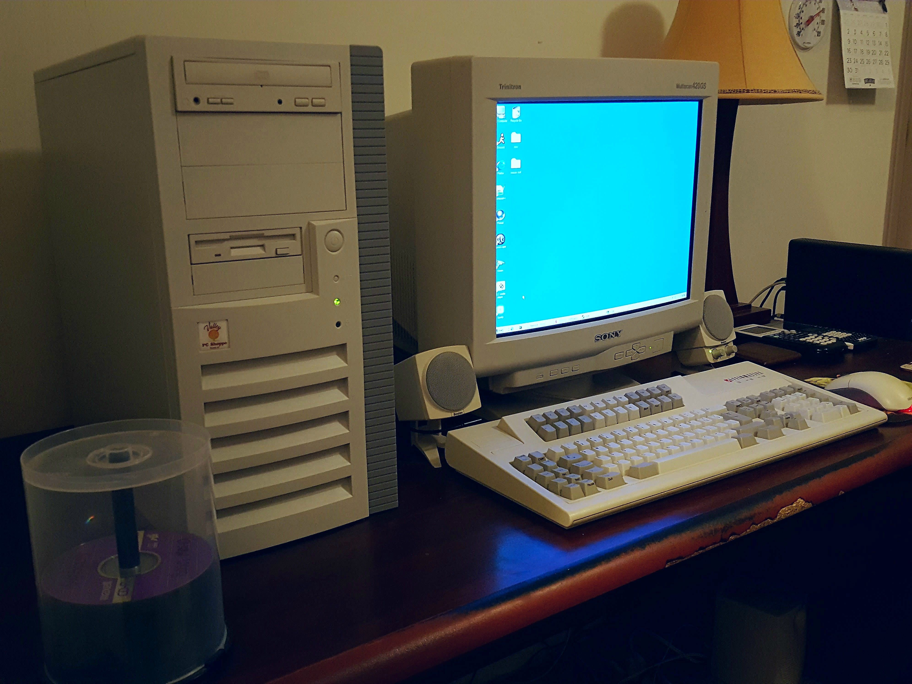

Программное обеспечение (ПО) — это совокупность программ, инструкций и данных, которые обеспечивают работу компьютера и позволяют пользователю выполнять различные задачи. История развития программного обеспечения тесно связана с развитием вычислительной техники. По мере совершенствования компьютеров программы становились более сложными, удобными и функциональными.

Программное обеспечение делится на три основные категории.
обеспечивает работу компьютера. Примеры: Windows, Linux, драйверы устройств.
помогает пользователю выполнять конкретные задачи. Примеры: Microsoft Word, Google Chrome
используется для создания и тестирования программ. Примеры: Visual Studio Code, компиляторы, отладчики.
Программное обеспечение делится на три основные категории.
электронные учебники и дистанционное обучение;
системы диагностики и ведения медицинских данных;
банковские программы и бухгалтерские системы;
автоматизация производства;
мобильные приложения, игры и социальные сети.
защита данных и обнаружение угроз;
История развития программного обеспечения показывает, как программирование прошло путь от сложного управления первыми электронными компьютерами до современных интеллектуальных систем. Развитие языков программирования, операционных систем, интернета и искусственного интеллекта сделало ПО важнейшей частью современного общества. В дальнейшем оно будет продолжать развиваться, повышая эффективность труда и открывая новые возможности в науке, образовании и бизнесе.